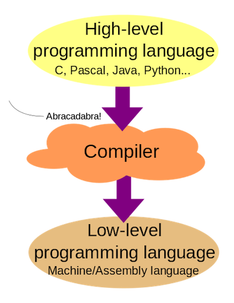

9 October 2017
Hardware vs Software
Hardware vs Software
How information is stored
binary
- 1 or 0 (on or off)
- This is how everything is stored! Even music and pictures!
- bit = 1 binary digit
- byte = 8 bits
- Two digits are easier to manipulate
- Less complexity = less errors or chances to fail (permutations of bits)
How do we get to binary?
Decimal vs binary
| Decimal | Binary |
|---|---|
| 0 | 0000 |
| 1 | 0001 |
| 2 | 0010 |
| 3 | 0011 |
| 4 | 0100 |
| 5 | 0101 |
| 15 | 1111 |
How do we get to binary?
Example
- 107 (decimal, base 10) corresponds to 01101011 in binary (base 2)
- Is 107 odd or even? (Is there no remainder after dividing by 2?)
- If it is odd: put a 1 in the row
- If it is even: put a 0 in the row
- In the next row use the integer division by 2 (
floor()or%/%) - Write all the bits from the bottom to top to get the binary value
| Divide last integer value (floor) | Even or odd? |
|---|---|
| 107 / 2 = 53.5 | + 1 |
| 53 / 2 = 26.5 | + 1 |
| 26 / 2 = 13 | + 0 |
| 13 / 2 = 6.5 | + 1 |
| 6 / 2 = 3 | + 0 |
| 3 / 2 = 1.5 | + 1 |
| 1 / 2 = 0.5 | + 1 |
| 0 / 2 = 0 | + 0 |
What is a program?
recipe analogy
- A program is a set of instructions that tell a computer what to do!
- A recipe for a computer
- Written example: how do you make a ham and cheese sandwich? (Think about making consistent results!)
Recipe: bake a sandwich
- shop groceries with a list
- Preheat oven to 450 F
- Put ham in a baking pan
- Put honey glaze on the ham
- Pour cheese
- Put ham in oven for 1 hour
efficient/great chef
- An efficient chef can use an ingredient without worrying about exactly how it is made
- A great chef ultimately understand how each component is made and interactions among the parts.
What is a source code?
- We can't tell a computer general statements of what we want to do…
- "Do my taxes!"
- "Write my thesis!"
- Code is a way of telling the computer what we want to do in words that it understands…

Workflow

- We edit the program
- A compiler translates this program
- The computer runs the translated program
- We analyze the output and go back to editing until our program is finished
- Source code can be:
- Compilated
- Interpreted
Syntax
superficial
- Some differences are superficial:
- BASIC:
print - Java:
System.out.print(); - C++:
printf();
- BASIC:
High level vs low level programming languages
-
#!/usr/bin/env python print "Hello from Biostat2!";
-
#include <stdio.h> int main(void) { printf("Hello from Biostat2!\n"); return 0; } -
.LC0: .string "Hello from Biostat2!" .text .globl main .type main, @function main: .LFB0: .cfi_startproc pushq %rbp .cfi_def_cfa_offset 16 .cfi_offset 6, -16 movq %rsp, %rbp .cfi_def_cfa_register 6 movl $.LC0, %edi call puts movl $0, %eax popq %rbp .cfi_def_cfa 7, 8 ret .cfi_endproc
Errors
run-time errors
- Errors are detected during execution causing it to crash like division by 0
C
#include <stdio.h>
int main(void)
{
int a = 8;
int b = 4;
int c = 0;
int average = (a + b) / 2;
int result = average / c;
printf("Dividing the mean of %d and %d by %d gives: %d\n", a, b, c, result);
return 0;
}
Floating point exception
R
a <- 8 b <- 4 c <- 0 average <- (a + b) / 2 result <- average / c result
[1] Inf
Errors
logical errors
- Errors are not detected, execution continues
C, spot the mistake
#include <stdio.h>
int main(void)
{
int a = 8;
int b = 4;
int c = 2;
int average = a + (b / 2);
int result = average / c;
printf("Dividing the mean of %d and %d by %d gives: %d\n", a, b, c, result);
return 0;
}
Solution
- average defined as
a + (b / 2) - and not
(a + b) / 2
Algorithm
definition
An algorithm is a well-ordered collection of unambiguous and effectively computable operations that when executed produces a result and halts in a finite amount of time Schneider and Gersting 1995
Algorithm
well-ordered
- All of the steps must be in a logical order.
- Otherwise errors could occur:
- example: You can't bake a frozen pizza before you take the plastic wrap off!
unambiguous
The directions have to make sense to be as simple as possible
If you can break down the step into two or more simpler steps, it is too complex
example: If the directions on the frozen pizza box say:
- Step 1: Bake the pizza What does this mean?
- Step 2: Eat the pizza
Pseudocode
method
- A method to organize a program in advance, and plan what you want to do
- Not written in normal language, but not in pure code either
- recipe for your program, someone else should be able to understand and utilize!
example
Get the users test and work grades. Tell the user they passed if their overall average is 60% or above.
pseudocode
print "Enter test average:" testGrade = getInputFromUser() print "Enter work average:" workGrade = getInputFromUser() overallGrade = (testGrade + workGrade) / 2 if (overallGrade >= 60) print "You passed"
Variables
Definitions
- Variables store information for later use
- Variable names should be clear and understandable
naming
- Be consistent with naming!, use naming conventions:
- alllowercase
- period.separated
- underscore_separated (recommended by Hadley Wickham)
- lowerCamelCase
- UpperCamelCase
naming
my_age,my_name,class_size,name_list,is_tallermy_ageto store a numbermy_nameto store letters (a "string")add_footerfor a function (action)
Control statements
IF, THEN, ELSE
definition
- IF, THEN, ELSE statements:
- Require boolean entries (
TRUE/FALSE) - Use indentations in the pseudocode
- Require boolean entries (
pseudocode
IF condition THEN
do_task()
ELSE
do_something_else()
ENDIF
flowchart
Logical/boolean operators
AND, OR, NOT
3 types
| A | B | A AND B | A OR B | NOT A |
|---|---|---|---|---|
| False | False | False | False | True |
| False | True | False | True | True |
| True | False | False | True | False |
| True | True | True | True | False |
Conditional blocks in R
if, else if and else
- blocks are delimited with curly braces
{and} - indent your code after
{, rstudio does it for you
demo
n1 <- 11
n2 <- 7
if (n1 == n2) {
print(paste(n1, "and", n2, "are equal"))
} else if (n1 > n2) {
print(paste(n1, "is greater than", n2))
} else {
print(paste(n1, "is smaller than", n2))
}
[1] "11 is greater than 7"
We will see dplyr::case_when() for multiple if / else statements
For loops
for loops in R
- loop on values
v <- c(3:7)
for (i in v) {
print(i)
}
[1] 3 [1] 4 [1] 5 [1] 6 [1] 7
- loop on indices
for (i in seq_along(v)) {
print(paste("indice", i, "=", v[i]))
}
[1] "indice 1 = 3" [1] "indice 2 = 4" [1] "indice 3 = 5" [1] "indice 4 = 6" [1] "indice 5 = 7"
for loops in R, the "are slow" myth
for loop with vector growing
for_loop <- function(lgt) {
res <- c()
for (i in seq_len(lgt)) {
res[i] <- i
}
length(res)
}for loop with allocated vector
for_loop_alloc <- function(lgt) {
res <- vector("integer", length = lgt)
for (i in seq_len(lgt)) {
res[i] <- i
}
length(res)
}for loop with Rcpp
library(Rcpp)
cppFunction(
"NumericVector for_rcpp(int x) {
NumericVector res(x);
for (int i=0; i < x; i++) {
res[i] = i;
}
return res;
}")history & fiction
@EmEmEff @quominus the slowness of for() loops is legendary: a mixture of history and fiction.
— Thomas Lumley (@tslumley) 12 June 2015
Other loops, while and repeat
Exist in R but not covered in this course
Objects have no names
In #rstats, it's surprisingly important to realise that names have objects; objects don't have names pic.twitter.com/bEMO1YVZX0
— Hadley Wickham (@hadleywickham) 16 May 2016
impact on memory
a <- matrix(0, ncol = 1000, nrow = 1000) b <- a
ais ~ 8 Mb in RAM
pryr::object_size(a) > 8 MB
- creating
bdoes not consume 16 Mb in RAM
pryr::mem_change(b <- a) > 920 B
- not a pointer, if
aorbare further altered, a copy is made
pryr::mem_change(b[1, 1] <- 1) > 8 MB
source: David Smith on his blog
Functions
Everything that exists is an object. Everything that happens is a function call. John Chambers
Functions
The most important thing to understand about R is that functions are objects in their own right. You can work with them exactly the same way you work with any other type of object. Hadley Wickam, Advanced R
everything is a function
type names without ()
`+`
function (e1, e2) .Primitive("+")
is.infinite
function (x) .Primitive("is.infinite")- same thing:
1 + 2 * 3
[1] 7
`+`(1, `*`(2, 3))
[1] 7
chunk of code to repeat a task
- that does “something”
- useful when you have to repeat some work (> 2)
- In R you already used some functions that are already provided:
- e.g.
sum(),sd()
- e.g.
map_dbl(1:3, `+`, 3)
[1] 4 5 6
Functions in R
minimal function
- Use the assignement
<-and the keywordfunctionto store a function in an object (name of function)
minimal example, does nothing
f <- function() {}
f
function() {}- Calling
fwill not execute the code inside the function - A function is called with parenthesis
()i.e.f()in our example
f()
NULL
- In R a function will always return something: Here
f()returnsNULL
all functions have 3 parts
body(), the inside codeformals(), the list of argumentsenvironment(), location of the function’s variables.
f <- function(x) x^2 f
function(x) x^2
formals(f) # assign is '='
$x
body(f)
x^2
environment(f)
<environment: R_GlobalEnv>
source: Hadley Wickham, Advanced R
Functions in R
putting some code inside the function
f <- function() {
print("Hello from biostat2!")
}- The code isn't executed yet: it is "stored" as an object for later use
- We can call the function as before using
f()
f()
[1] "Hello from biostat2!"
Functions in R
returning a result
Example
f <- function() {
1 + 1
print("Hello from biostat2!")
3 + 2
}
f()[1] "Hello from biostat2!"
[1] 5
Save function' output
result <- f()
[1] "Hello from biostat2!"
# display the content result
[1] 5
with no explicit return
- The function returns the output of the last command
Functions in R
returning a result
You can explicitly use the return() command to exit the function earlier and return a specified value
return() without argument
f <- function() {
1 + 1
3 + 2
}
f()[1] 5
f <- function() {
1 + 1
return()
3 + 2
}
f()NULL
return() with value
makes function little useless
f <- function() {
1 + 1
return(6)
3 + 2
}
f()[1] 6
return() with variable
makes more sense
f <- function() {
res <- 1 + 1
return(res)
3 + 2
}
f()[1] 2
Functions in R
arguments
- You can specify the objects/variables your function will use as arguments
without default
rm(z) # Removing any z object from global env
Warning in rm(z): object 'z' not found
f <- function(z) { # Note the 'z'
z <- z + 1
return(z)
}
f()
Error in f(): argument "z" is missing, with no default
f(2)
[1] 3
with default
rm(z)
Warning in rm(z): object 'z' not found
f <- function(z = 0) {
z <- z + 1
return(z)
}
f()
[1] 1
f(2)
[1] 3
Exercice
what are the 4 c's?
c <- 10 c(c = c)
solution
c <- 10assign scalar 10 to namecin global envc()concatenate function(c = c), 1st is named vector, 2nd is scalar (10)
explain the output
- look at help pages
c <- 10 c(c = c)
c 10
solution
- vector named, index 1 = "c", value
10 - unamend version:
c(c = c, use.names = FALSE)
[1] 10
Environments and promises
- when called, functions create their own environnment
- arguments are evaluated only when function is called, it's a promise
ls() list loaded objects
ls()
[1] "a" "average" "b" "c" "f" "i" "n1" [8] "n2" "result" "v"
ls() evaluated inside f()
f <- function(x = ls()) {
a <- 1
x
}
f()
[1] "a" "x"
ls() evaluated in global environment
f(ls())
[1] "a" "average" "b" "c" "f" "i" "n1" [8] "n2" "result" "v"
source: Hadley Wickam Advanced R
Don't worry
Advanced topic, this is for your own knowledge!
Functions in R, named arguments
example
Going back to our if, if else, else example and wrapping it in a function:
2 arguments
my_compare <- function(n1, n2) {
if (n1 == n2) {
message(paste(n1, "and", n2, "are equal"))
} else if (n1 > n2) {
message(paste(n1, "is greater than", n2))
} else {
message(paste(n1, "is smaller than", n2))
}
}
my_compare(10, 10)10 and 10 are equal
message("unnamed the arguments: R use order")unnamed the arguments: R use order
my_compare(2, 10)
2 is smaller than 10
my_compare(11, 10)
11 is greater than 10
message("named the arguments: safer")named the arguments: safer
my_compare(n1 = 11, n2 = 10)
11 is greater than 10
message("named arg allows you to switch them")named arg allows you to switch them
my_compare(n2 = 10, n1 = 11)
11 is greater than 10
Manage exceptions
- It is unlikely that your code will crash R (runtime error)
- Try the classical division by 0 (
1/0) - Many exceptions are catched and handled by R
- Try the classical division by 0 (
my_function <- function(v) {
result <- v / 2;
print(result)
}
my_function(10)
[1] 5
my_function(TRUE)
[1] 0.5
my_function("a")
Error in v/2: non-numeric argument to binary operator
Manage exceptions
- It is better to implement tests to avoid runtime errors or logical errors. Helps the debugging process.
- R provides useful functions to test your variables:
is.numeric(),is.character() - R provides also useful functions to manage exceptions:
stop(),warning()
- R provides useful functions to test your variables:
my_function <- function(v) {
if (!is.numeric(v)) stop("argument v should be a number!")
result <- v / 2;
print(result)
}
my_function(10)
[1] 5
my_function(TRUE)
Error in my_function(TRUE): argument v should be a number!
my_function("a")
Error in my_function("a"): argument v should be a number!